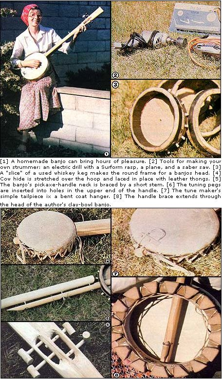

I've always wanted to play an instrument, but-until a few years back-I was kept from my goal by a kind of technological snow job. I lacked the money to purchase the banjo I dreamed about . . . and, when faced with the piano-finished soundboxes and mother of pearl-inlaid necks that line most music store shelves, I became convinced that I could never construct a worthwhile musicmaker!
My eyes were opened, though, during a trip that took me to the streets of Bombay, India. While there, I encountered a toy vendor who was selling paper dragons . . . one of which dangled from a string fastened to the end of a makeshift fiddle. The peddler was playing "Chim Chim Cheree" (yep, the Mary Poppins song . . . you're probably no more surprised than I was!), and I found his music so delightful that I was moved to examine the instrument more closely.
Its soundbox was an empty tuna can stretched with what I could only guess was dried rat skin (well, at least that of some small, thin-hided animal), and the neck was a stick broken from an orange crate. Looking closer, I noted that the violin had only one friction tuning peg and a single string that cleared the neck by a good half-inch on its way over the bridge to a wire hook on the can's edge.
The musician's bow consisted of a few strands of horsehair strung loosely between the ends of a bent bamboo twig. He used his left thumbnail as a movable fret, and added tension to the horsehair with the fingers of the hand that held the bow. In short, I was surprised (and elated!) to discover that the music he produced was beautiful despite-or perhaps because of-the crude nature of his instrument.
Once I arrived home in California, I set to work-buoyed by my overseas experience-to build a crude but serviceable musicmaker of my own. First I located a small used whiskey keg, cut a banjo-head-sized hoop from it, scoured out the char, and sanded the short cylinder smooth.
With that done, I drilled evenly spaced 5/16"-diameter holes around the outside of the head, and glued identical lengths of dowel into each of the bores. My next step was to obtain a piece of cowhide (goatskin would have been better, but I was unable to find the thinner material) . . . and soak it so it would shrink and tighten in position as it dried. (I planned to stretch it over the head by running soaked leather lacing through holes in the hide and around the pegs in the keg section . . . but wanted to wait to do so until after the instrument's neck was in place.)
My banjo's neck was the result of a bit of "by guess and by gosh" figuring. I first drilled two holes near the to-be-covered edge of the head, and opposite each other, that were big enough to let me insert a length of hoe handle (it protruded about one inch on one side of the barrel section and six inches on the other) to function as a stem on which the neck could be fastened.
I constructed the "fretless fretboard" itself out of a planed-down Louisville Slugger brand baseball bat . . . although later versions, including those shown in the photos, started out as pickaxe handles. One end of the neck was shaped to fit the curve of the head, and angled in such a way that the strings would run roughly parallel to the flattened bat surface. Then the neck was attached to the Stem with screws and glue, and another threaded fastener was run through the keg and into the bat to secure the fingerboard to the head itself.
My remaining tasks were to shape the openings for the tuning pegs (as shown in the accompanying photo), add a bone "nut" below them, stretch on (and dry) the cowhide, bend a coat hanger to make a tailpiece, and sand down some pieces of 5/16" dowel until they had the right taper to be used as pegs. (The peg assemblies on my later banjos, including those illustrated, are a little fancier than were the ones in my prototype . . . but even the improved friction pegs sometimes work in a hit-or-miss, though still acceptable, fashion.) And that's all there was to building my own tunemaker. I bought a bridge and some strings and began making music!
I've made a few other funky banjos since that first successful experiment: Some have frets set into the neck, others are the five-string style, and one of my favorites follows the pattern of construction detailed above but has a head which is actually a bottomless clay bowl that I threw on my potter's wheel. And every one of them has brought me (and, I like to think, some of the folks around me) pleasure.
Of course, my story may not tell you all you need to know to put together a jury-rigged musicmaker of your own (after all, perhaps a banjo isn't even what you have in mind). However, if you first check your local library for books containing specific information on construction, maybe my experience can be a bit of an inspiration to you.
Just keep in mind that your goal is to "make your own kind of music" anyway . . . so why should you let the dream be limited to the confines of somebody else's idea of how your instrument should look?
|
 |
|
|